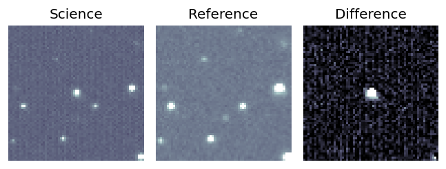
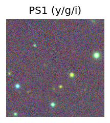
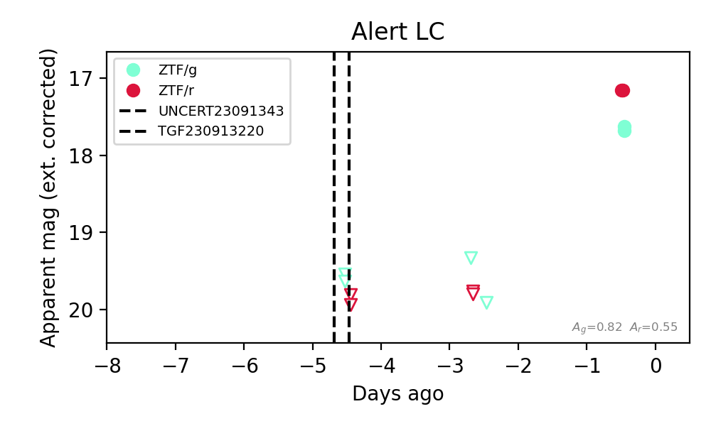

Candidate List 20230917Last night — ZTF: 1 passed basic cuts (1 young) · LSST: 0 passed basic cuts (0 young)Previous Day Next Day
Section 1: New Sources (age<1d) Section 2: Old (1-5d) sources observed last nightplaceholder
Section 1: New Afterglow/FBOT Cands Last Night (1)
1. [ZTF] ZTF23abelseb (Afterglow?) (TNS: AT 2023sva) [Back to Top] [Share] [Trigger Swift] [Fritz Alert] [Fritz Source] [Lasair]RA, Dec: 14.24667, 80.14559 0h56m59.20s, 80d 8m44.11sGalactic (l, b): 123.18053, 17.27652 ext(g-r) = 0.262


TESS: Sectors [18 19 25 26 52 53 58 59 73 78 79 85 86]
PS1: 0 sources in 3 arcsec
LegacySurvey: 0 sources in 3 arcsec

Extinction-corrected gr color:
From alerts: 0.49 +/- 0.06 mag
Consistent with synchrotron, g-r>0!
Rise Rate:
g: 1.14 mag/day
r: 1.22 mag/day
Fade Rate: